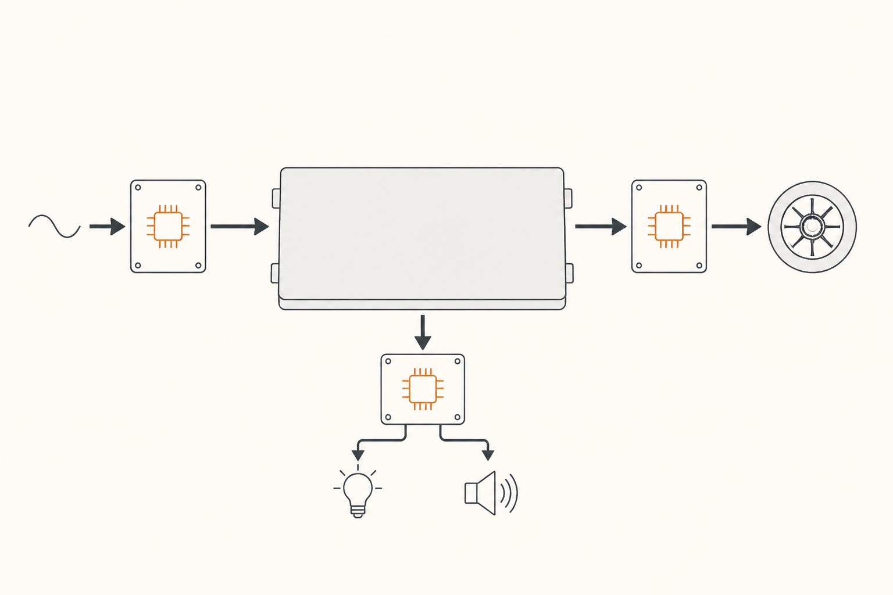

Electrónica de potencia: OBC, DC-DC y los semiconductores que los hacen posibles
La batería habla un solo idioma eléctrico: corriente continua (DC) a unos 400 V. Pero todo lo que la rodea — el enchufe de tu casa, las luces del coche, el motor de tracción — habla idiomas distintos. Hace falta un grupo de traductores que conviertan la electricidad de un formato a otro, en ambas direcciones, sin perder energía. Esos traductores son la electrónica de potencia, y dentro de ellos vive una de las revoluciones silenciosas más importantes del coche eléctrico: los nuevos semiconductores.
Tres traductores en torno al pack
Si pones la batería en el centro y miras qué le entra y qué le sale, encuentras siempre tres cajas electrónicas:

Los tres son variantes del mismo concepto: convertidores. Y los tres usan el mismo truco básico para convertir: encender y apagar la corriente muy rápido, miles de veces por segundo, dejando pasar pulsos cortos cuya media equivale al voltaje o la forma de onda que quieren producir. Esa "fabricación a base de pulsos" se llama conmutación, y de su calidad depende todo.
Lo que hace un semiconductor de potencia
El "interruptor" que enciende y apaga la corriente no es mecánico (sería imposible mover una palanca diez mil veces por segundo). Es un semiconductor: un componente electrónico que actúa como interruptor controlado por una señal. Aplicas un poco de tensión a su patilla de control y deja pasar la corriente. Quitas la señal y la corta. Sin partes móviles, instantáneo, repetible.
El problema es que cada vez que el semiconductor conmuta, pierde un poquito de energía como calor. Multiplica ese poquito por miles de veces por segundo, y la pérdida se nota: en un inversor de coche eléctrico, esas pérdidas pueden ser un 5-8% de toda la energía que pasa. En un trayecto largo, son kilómetros perdidos en forma de calor.
Durante décadas, los semiconductores de potencia fueron de silicio — el mismo material de los chips de ordenador, pero diseñado para soportar voltajes y corrientes altos. Y se hicieron muy bien. Pero el silicio tiene un techo: pierde demasiado calor en cada conmutación, lo que limita la frecuencia, la eficiencia y el voltaje máximo. Para superarlo, hay que cambiar de material.
SiC y GaN: los nuevos materiales
Hay dos materiales emergentes que están desplazando al silicio en la electrónica de potencia del coche eléctrico, especialmente en el inversor.
SiC (carburo de silicio). Mismo silicio, pero combinado con carbono en una estructura cristalina mucho más resistente. Las pérdidas por conmutación son típicamente la mitad que en silicio puro, y aguanta voltajes mucho más altos sin romperse. Su consecuencia práctica es directa: un inversor de SiC es más eficiente (más autonomía con la misma batería), más compacto (caben más kW en menos volumen) y permite arquitecturas de alto voltaje (de ahí los 800 V que veremos en la píldora 10). Hoy es el estándar emergente en coches premium y se está extendiendo a gama media.
GaN (nitruro de galio). Otro material de "alta movilidad" que conmuta aún más rápido que SiC. Se usa más en electrónica de baja-media potencia (cargadores externos, fuentes de alimentación, OBC) que en el inversor principal del motor, aunque está empezando a aparecer también ahí. Su gran ventaja es la velocidad de conmutación, que permite hacer convertidores muy pequeños y eficientes.
La diferencia con silicio puro no es marginal: cambiar a SiC en un inversor puede ganar entre un 5% y un 10% de autonomía en autopista sin tocar la batería. Es una mejora gratis, escondida dentro de un componente que el conductor no ve y nunca menciona.
Por qué estos componentes están "dentro" del coche
Una pregunta legítima: ¿por qué el OBC va dentro del coche y no en el cargador exterior? Razones históricas y prácticas.
El enchufe de casa entrega AC y prácticamente todos los puntos de carga lenta del mundo entregan AC. Si el coche llevara su traductor a bordo, podría enchufarse en cualquier sitio. Si no, cada punto de carga necesitaría su propio traductor caro. Es más barato repartir un OBC por coche que poner uno en cada enchufe del planeta. La carga rápida sí se beneficia del enfoque opuesto: el cargador exterior tiene su propio convertidor (mucho más grande y caro) que entrega DC directamente al pack, saltándose el OBC del coche para no estar limitado por su techo de potencia.
Este es el principio que más adelante diferencia "carga lenta AC" de "carga rápida DC", y que estructura toda la píldora 9. Quédate con la idea: el OBC vive dentro del coche para que el coche pueda enchufarse en cualquier sitio sin pedir traductor especial.
FácilNombra los tres convertidores principales de un coche eléctrico y di qué traduce cada uno.
OBC (Onboard Charger): AC del enchufe → DC para la batería. DC-DC: alta tensión del pack (~400 V) → 12 V para accesorios. Inversor: DC del pack → AC trifásica para el motor.
Fácil¿Por qué los nuevos materiales (SiC, GaN) son más eficientes que el silicio clásico?
Porque pierden mucha menos energía en cada conmutación. El silicio puro genera más calor cada vez que enciende y apaga la corriente; SiC y GaN aguantan más voltaje y conmutan más limpiamente. Resultado: menos pérdidas, menos calor, más autonomía.
MedioTu coche tiene un OBC de 7 kW. Conectas un cargador AC público de 22 kW. ¿A qué velocidad cargas?
A 7 kW. El cargador puede dar más, pero tu OBC es el cuello de botella: solo es capaz de traducir 7 kW de AC a DC para la batería. La carga AC siempre va a la velocidad del componente más lento, y casi siempre ese componente es el OBC del coche.
Difícil¿Por qué un coche con inversor de SiC puede tener una autonomía mayor que otro coche con la misma batería pero inversor de silicio?
Porque parte de la energía que sale de la batería se pierde como calor en el inversor durante las conmutaciones. Si el inversor de SiC pierde la mitad que el de silicio, una porción mayor de la energía llega al motor y se convierte en kilómetros. La diferencia puede ser del 5-10% en autopista. Es eficiencia "regalada" por un cambio de componente, sin que el conductor note nada distinto en el comportamiento.